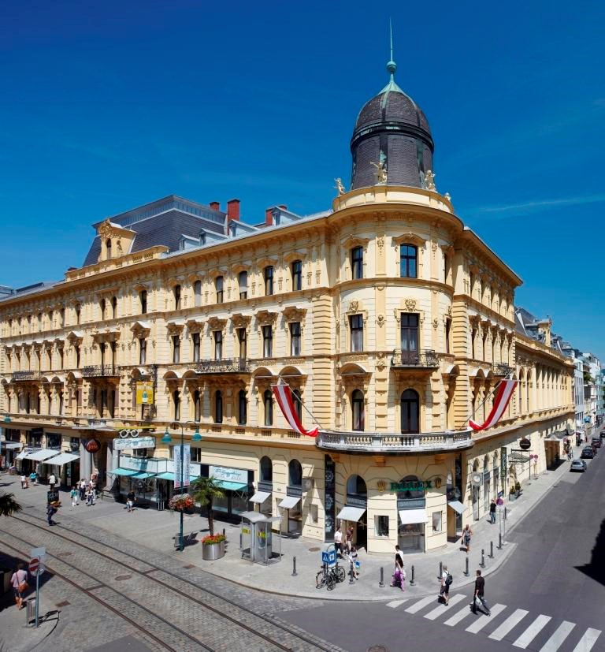
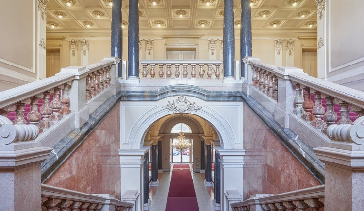
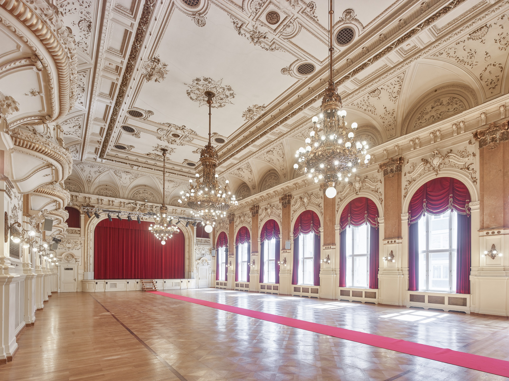
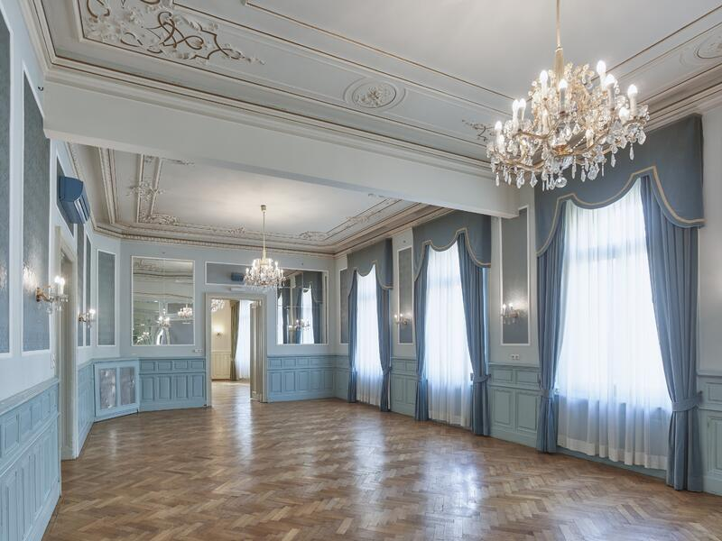
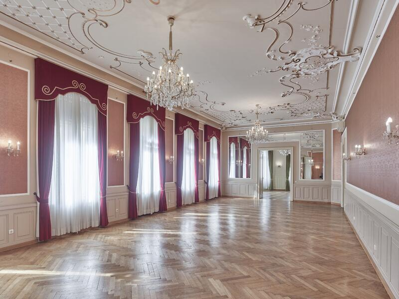

Startseite
Ballkarten
Sitzplätze, Tische und Logen
☰ Menu
Veranstaltungsort Palais Kaufmännischer Verein
Palais Kaufmännischer Verein von Außen

Eingang, Empfang und Aufgang zum Festsaal

Festsaal/Hauptsaal

Blauer Saal

Roter Saal

Weitere Fotos und Daten der Örtlichkeit finden Sie unter der
offiziellen Website des Palais Kaufmännischer Verein.